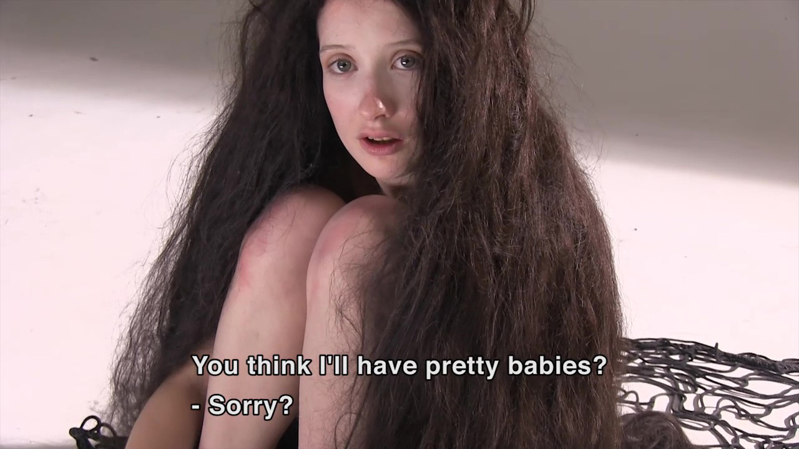

|
VIDOASE
watch my movies online ART TALK SASKIA VAN IMHOFF /
MAARTEN ARNTZENIUS
 A study of a man called Maarten. I met him in the electronica shop where he works. I asked him for advice on a thing I wanted to buy, but out of nowhere he started to talk to me about women. That was fascinating to me. So I proposed to meet at his house. This film is the result of 3 meetings over a 2 month time span. His main topic is women and what they are doing to men. He is writing a book titled: 'The Amazon Woman 2.0'. During the filming session his theories and thoughts about woman are sort of supplemented by 3 things that happen during the period of me filming him. 1: His mother I get the impression that his relationship with his mother is very telling about the way he relates to women so I start filming her as well. Then I discover that she is about to end her life. I'm interested in the way Maarten deals with this. 2: A new daughter He also discovers that he has a daughter of 21, and he feels semi-betrayed by the mother who never told him about this. 3: Love Finding new love. Falling in and out of love with various women. Note: I construct these films for a concentrated watch, watch preferably on a larger screen with good sound. I didnt compress the sound for mini speakers. There is actually a dynamic range in the audio. Feel free to download the entire thing here. So you might not be bothered by streaming stutters. DUTCH - NO ENGLISH SUBS YET ANCIENT AMATEURS
This film was tailor made to be shown as an art install in the Stedelijk Museum Amsterdam (the Bureau project space they have). It follows a small group of porn actors in their attempt to make an art film. And in their attempt to make something artistic, they start using strategies that are very similar to what most professional artists do: trying to discover what is 'real' or 'essential' about something and conveying that within the artpiece. In this case, the porn-actors conclude that porn is sort of fake because it isn't about reproduction and creating life and making babies. In order to reconnect to some sort of essence, they make a film in which their pornography does have consequences: Babies are born. The dramatic aspect is that every baby seems to be immediately trapped into a rigourous life circle. Once a baby is born, it is immediately impregnated in order to reproduce and die. The film shows 2 life cycles and one dying event. But it is also at the same time a making-of documentary. |